EDA Examples# Exploratory Data Analysis (EDA) is an art of looking at one or more datasets in an effort to understand the underlying structure of the data contained there. Below are few EDA notebooks from the net. 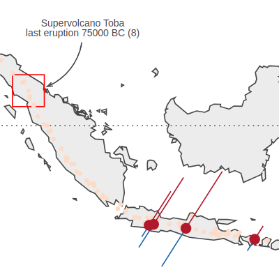 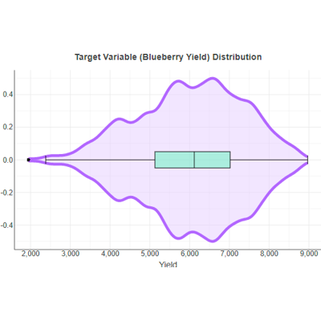 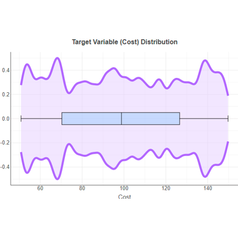 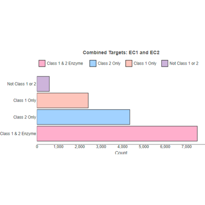 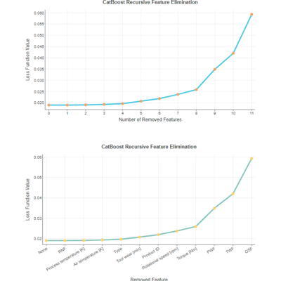 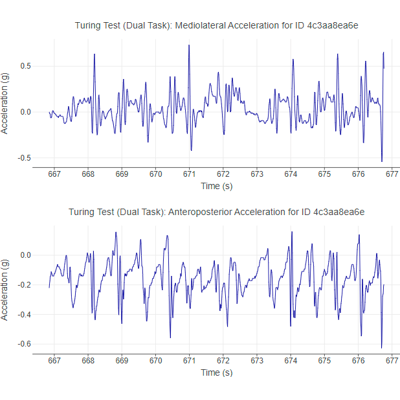 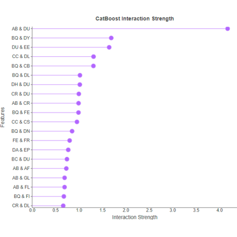 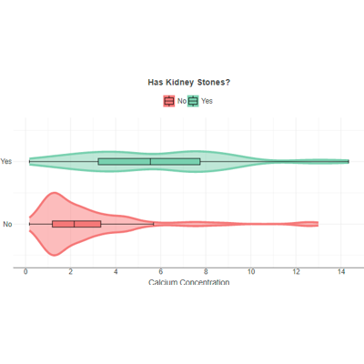 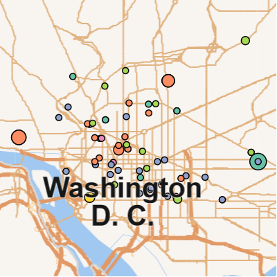 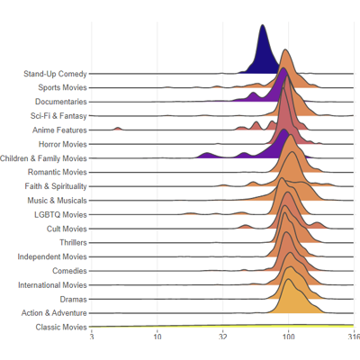 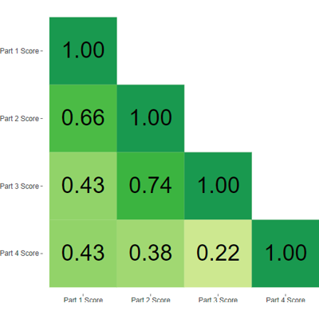 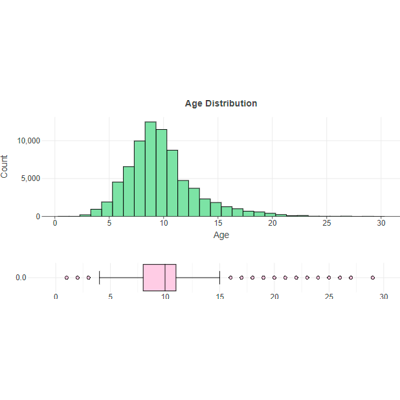 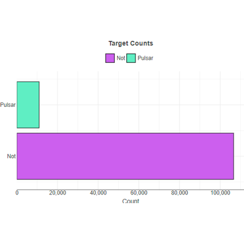 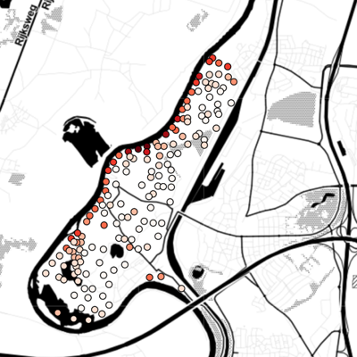